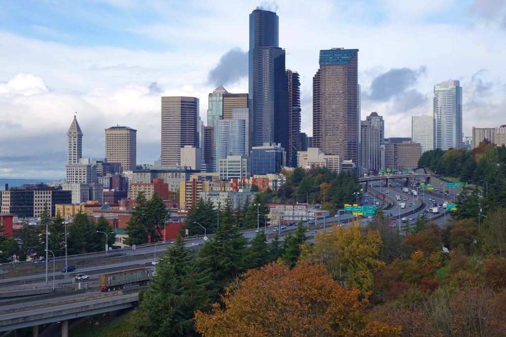

Where I come from...
I've lived my whole life on the Puget Sound, and was fortunate enough to follow my ambitions of being a musician in my youth. Then fatherhood changed all that, and I chose to return to college at the age of 35 to learn how best to ameliorate the incoming stresses to our region.
I completed my B.A. in Sustainable Urban Development at the University of Washington-Tacoma in the Winter of 2021, and returned to the school that Autumn to earn a M.S. in Geospatial Technologies. I currently work for the Office of Community Partnerships at UW-T under the guidance of Dr. Ali Modarres, and look forward to building a career in geographic data analysis within the region.